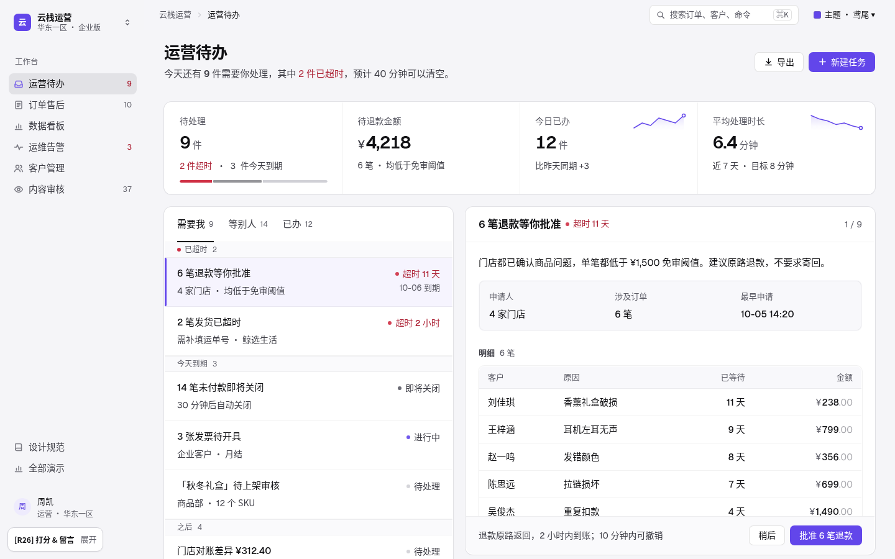
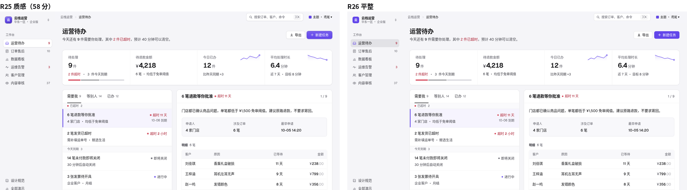
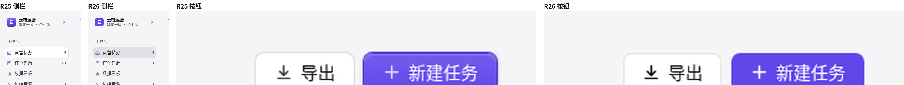
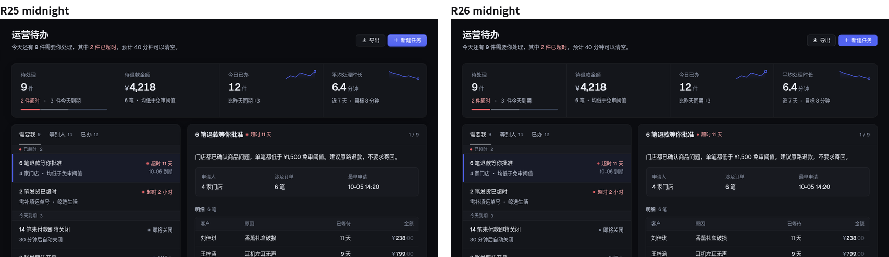
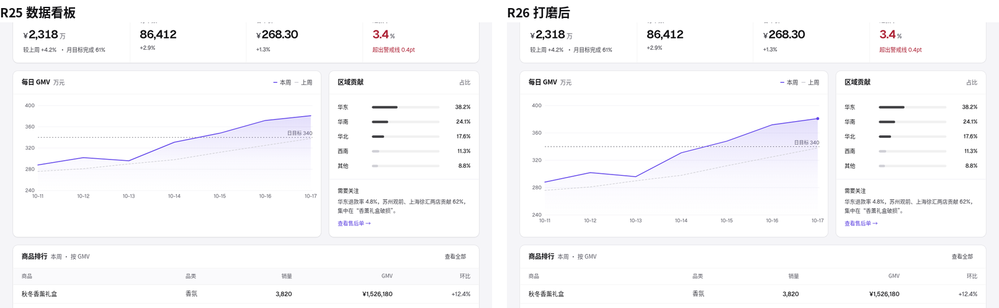

这套语言只做一件事：让人在任何组件库里，都能更快地看懂、核对、做决定、离开。R25「质感」58 分（R24 是 55），批注是「按钮不要 3d 的感觉，继续改进。」R26 的结构、分组、材质令牌都沿用 R25，只在最后加一层 flat.css：所有控件全平，包括按钮、分段控件、输入、复选框、头像和侧栏当前项。主按钮是纯鸢尾，悬停和按下各深一阶；次按钮是 1px 透明边；轻按钮只有文字，悬停出现浅色底。没有渐变、内高光、投影，也没有按下位移。逐个元素复查后，深色主题去掉了面板顶边高光，面板只留透明环和 1px 极淡影；真正的投影只给菜单、⌘K、提示和 Toast。另外打磨了几处：GMV 图和右侧面板同高、终点加实心点，表头去掉灰底，复选框改成平方块，悬停底统一。

打开演示 → 六种后台都按这套做一个对象一个白面板；页头 → 指标面板 → 工作面板三层，眯眼看也分得清；列表再按紧急程度分段。
界面黑白灰；鸢尾只给主操作、选中、焦点；状态是圆点 + 文字，红色只给异常。
控件全平：纯色、1px 透明边、浅色底；深度只给菜单、⌘K、提示这些真正浮起来的层。
R25 加了材质层（58 分），批注「按钮不要 3d 的感觉」。R26 在它之后加 flat.css：所有控件去掉渐变、内高光、投影、斜面环和按下位移；逐个元素复查后，面板只留透明环 + 1px 极淡影，深色主题去掉顶边高光，侧栏当前项改成平底；只有菜单、⌘K、提示、Toast 保留真正的投影。令牌写在 material.css ① 和 flat.css 开头，四个组件库都能映射（Ant Design boxShadow / borderRadiusLG、Element --el-box-shadow-light、shadcn --shadow / --radius、MUI shadows[1..3]）。R25 的来源与实测见 R25 craft.md。
| 令牌 | iris | midnight | 用在哪 |
|---|---|---|---|
--color-bg / --color-surface | #F5F5F8 / #FFFFFF | #0B0C10 / #14161B | 画布 / 面板；靠底色差分层 |
--m-line · -soft · -strong | 文字色 8% · 5.5% · 11% | 白 7.5% · 5% · 11% | 面板环 · 面板内分隔 · 控件环 |
--m-ink | 24,20,46（深紫灰） | 0,0,0 | 所有投影的墨色，不用纯黑 |
--m-e0 | 0 0 0 1px line | 井、表格外框 | |
--m-e1 | 环 · 0 1px 2px .035 | 环（白 7.5%），无内高光、无投影 | 面板、KPI 面板（R26 起不再给侧栏当前项和分段滑块） |
--m-e2 | 环 · 0 2px 4px .05 · 0 8px 20px -6px .10 | 可点卡片悬停 | |
--m-e3 | 环 · 0 4px 8px .06 · 0 16px 40px -8px .18 | 环 .09 · 0 16px 48px -8px .7 | 下拉、命令面板、提示、Toast |
--f-line · --f-line-hover | 文字色 12% · 20% | 白 12% · 20% | 次按钮、输入、搜索、复选框的 1px 边（R26 取代 --m-ctl，控件不再有投影） |
--f-tint · --f-tint-strong | 文字色 5% · 8% | 白 6% · 9% | 轻按钮悬停、分段凹槽、侧栏当前项 |
| 主按钮 | primary → 悬停 primary-hover → 按下 primary-active，纯色，无渐变、无高光、无影 | 每屏最多一个 | |
| 圆角 | 标签 6 · 控件 7 · 井 9 · 面板 12 · 浮层 14 | 内层 ≤ 外层 | |
| 字形 | h1 −0.022em · KPI −0.03em + tnum · 单位 500 三级灰 · 金额小数 55% | Geist 只有 400 / 500 / 600 三个字重 | |
| 动效 | 控件 120ms ease，只过渡颜色和边；没有位移 | 不弹跳、不缩放、不下沉 | |
为什么：R24 的面板是 1px #E1E1E7 实线框。在带色画布上，实线框把面板“画”出来，看起来像线框图。Vercel、Attio、Stripe 的面板边几乎只是比画布亮一阶：一圈文字色 8% 的透明环，加一道 1px 的极淡带色影（R26 起去掉了 6px 远影，面板只是“分开”，不是“浮起”）。透明环在任何底色上都和底色融合，不会出现灰色光晕（Geist：“Keep material shadows translucent”）。
--m-e1 = 0 0 0 1px text·8% + 0 1px 2px ink·3.5%（R26 去掉第二层远影；深色只留环）· ink = 24,20,46
为什么：Dribbble 上常见的高级感是大投影、大圆角、毛玻璃。放进后台，它会让每块面板都在抢注意力，表格反而难读。规则：面板只用 e1（环 + 3.5% 的 1px 影）；可点击卡片悬停到 e2；只有菜单、命令面板、提示这些真正浮在内容上的东西用 e3（最深 18%）。不用 backdrop-blur 做面板，不用彩色光晕。
e1 环 + 3.5% · e2 ≤ 10% · e3 ≤ 18%（只给浮层）· 控件 0 投影 · 不用 backdrop-filter
为什么：R25 的主按钮有 12% 渐变、顶部内高光、深一阶的轮廓环和带色投影，次按钮有环和 1px 影，按下还会下移。Xiang 的批注是「按钮不要 3d 的感觉」。Linear、Vercel、Stripe 当前的后台按钮都是平的：深度留给浮层，控件只用颜色和 1px 线表达状态。规则：主按钮是纯鸢尾色块，悬停深一阶（primary-hover），按下再深一阶（primary-active）；次按钮是白底 + 文字色 12% 的 1px 边，悬停边加深到 20%；轻按钮只有文字，悬停出现 5% 的浅色底。分段控件、输入框、复选框、头像同理：不用渐变、不用内高光、不用投影、不用位移。焦点用 2px 外框（留 2px 缝），它表示“键盘在这里”，不是斜面。
主 = primary / hover / active 三档纯色 · 次 = 1px --f-line（文字色 12%）· 轻 = 悬停 --f-tint（5%）· 控件 box-shadow: none · 无 translate
为什么：大号数字用默认字距会显得松散（字形设计时按正文字号调的间距）。Mercury 和 Stripe 都把金额当成排版主角：大数字 −0.03em、等宽数字，单位与货币符号降为三级灰、小一号。趋势线用 1.5px 鸢尾线 + 缓动停点渐变（@jh3yy：“ease your gradients”），终点一个小圆；只放在“今日已办、平均处理时长”这类趋势本身有意义的格子里，不是每格都放。
.kpi .v 28/600 · −0.03em · tnum · 单位 500 三级灰 · .kspark 84×28 · 渐变停点 .18 / .10@30% / .035@60% / 0
为什么：Linear 2024 改版把品牌色从界面框架里退出来：侧栏当前项不是一块实色胶囊，也不是浮起的白片（R25 的做法，R26 去掉了它的投影），而是一层文字色 8% 的平底，只有图标用主色。Raycast 要求所有图标遵守同一套描边和圆角规则；我们统一 16px 网格、1.5 描边、圆头圆角。粗细混用的图标是“拼凑感”的主要来源。
.nv.on = --f-tint-strong（8%）· 无投影 · 图标 primary · .ico stroke-width 1.5 · round caps
为什么：深色模式里投影几乎看不见，层级只能靠“越高越亮”（Linear：用白色透明度做 elevation）。实测 Linear 深色：画布 #08090A，面板 #101112–#161718，面板顶边再亮一阶（#1B1C1D–#202122），R25 照搬了这条顶边内高光；R26 判断它属于“斜面”式的立体暗示，和平控件冲突，所以去掉，层级只靠“亮一阶 + 白 7.5% 环”。midnight 用 #0B0C10 画布、#14161B 面板，保留一点星蓝。不用纯黑画布，也不用灰色实线框。
midnight · bg #0B0C10 · surface #14161B · 环 rgba(255,255,255,.075) · 无内高光 · 面板无投影
为什么：键盘焦点必须一眼可见，但不能像报错。浏览器默认的蓝色外框和控件贴在一起，看起来像描边粗了；3px 半透明大光晕又太软。做法是 outline: 2px 主色 60%，outline-offset: 2px：和控件之间留出缝，不改变控件本身的样子，所以不会读成斜面或投影。四个组件库都支持 outline 覆盖。
:focus-visible{outline:2px solid primary·60%;outline-offset:2px}
为什么：同心关系是“做工细”的直觉来源：外层面板 12，里面的井 9，井里的控件 7，标签 6；浮层比面板再大一档（14），因为它离眼睛更近。内层圆角等于或大于外层时，转角处会出现一道“鼓起来”的缝。Vercel Geist 也是 6 / 12 / 16 三档。
--m-r-tag 6 · --m-r-ctl 7 · --m-r-well 9 · --m-r-panel 12 · --m-r-float 14
1440×900、反馈面板收起时截图。左 R25（58 分），右 R26。结构、文字、数量完全一样。


细节：主按钮从渐变 + 高光 + 投影变成纯鸢尾；次按钮只留 1px 边；侧栏当前项从浮起的白片变成平底；品牌标去掉渐变；分段滑块去掉投影。

midnight：面板去掉顶边内高光和投影，层级只靠亮一阶 + 白 7.5% 环。

打磨：GMV 图拉高、和右侧面板同高，主序列终点加实心点；表头去掉灰底（和 Linear / Vercel 一样，只靠字色区分）；复选框改成平的 16px 方块；悬停底统一为 2.5%。
R25 与 Linear / Stripe / Vercel / Attio 的并排比对见 R25 规范 · 比对。
所有业务页：灰画布上，页头（标题 26 + 一句结论 + 右侧操作，直接放在画布上）→ KPI 面板（一个面板四格，竖线分格）→ 主体面板（整宽表格面板，或 5 栏列表面板 + 7 栏详情面板，或 8 栏图表面板 + 4 栏侧栏面板）。页头到内容 32，面板之间 20，面板内边距 20。
R22 是目前得分最高的一轮，所以它是基线：指标面板、结论先行的副标题、鸢尾主按钮、有意义的红色和图表强调都保留。R23 只带回不改变观感的修正；新增的两处改进都只在列表和指标里加一层“先归类”，不加新颜色、不加新按钮。
| 类别 | 内容 | 出处 |
|---|---|---|
| 保留 | 工作台页的指标面板 · 页头一句结论 · 页头鸢尾主按钮 · 客户席位图鸢尾强调段 · 运维红色 KPI · 详情面板贴合视口 | R22 |
| 带回 | 订单数据一致（待处理 10 / 超时 5 / ¥6,034，页签与分页 11 单）· 按钮式下拉代替原生 select · 运维“阈值”统一 · 状态写法与具体日期 · 判断条颜色 bug · 联系人“一般”圆点 · 页签头 56 与面板头对齐 · 内容审核列表与详情同底 | R23 |
| 不带回 | 去掉 KPI · 数字挤进页头一行 · 撑满一屏的分栏 · 列表行 2×2 · 中性灰图表 · 页头主按钮降级 · 翻页按钮 / 排序下拉 / 行尾 ⋯ · 7 档字号 | R23 |
| 新增 | S2 列表按紧急程度分段（运营待办、运维告警）· S3 指标分段条与列表同序同色 | R24 |
为什么：R23 把运营待办、运维、内容审核的四格指标并进页头一行 14px 的“数字 │ 标签”，打分页上 24px 以上的大字从 8 个变成 1 个，分数从 58 掉到 40。眯眼看，R22 是“页头 → 指标带 → 工作面板”三层，R23 只剩两根高柱子。大数字 + 单位 + 一句说明扫一眼就够，一行小字要逐个读。
.grid:has(>.kpi) 一块面板四格 · 数字 28/600 · 说明 13
为什么：R22 的待办列表是一条平铺的 9 行，要读完每行右侧的状态才知道哪几件最急。分成三段后，组标题替你先归好类（Gestalt 的共同区域 + Miller 的组块）：先看“已超时 2”，再看“今天到期 3”。Linear 的按状态分组、Gmail 的优先收件箱都是这个做法。组标题是 32 高的浅底条，13 号次要色加计数，只有“已超时”带红点；不加新颜色，也不加新按钮。运维告警同理：严重 / 警告 / 其他。
.lgh 32 高 · surface-subtle · 13/500 · 计数 tertiary · 吸顶
为什么：“待处理 9 件”下面加一条 4px 的分段条：红 = 已超时，深灰 = 今天到期，浅灰 = 之后，顺序和颜色与下面列表的三段完全一样。长度比数字读得快（Cleveland & McGill），同色同序把指标和列表连成一组；处理掉一件，分段条、说明、副标题、侧栏计数一起变。不要另起一套颜色（饼图、彩虹色）——那要读者再学一次图例。
.kseg 高 4 · 间隔 2 · danger / 灰 55% / border-strong
为什么：R23 为了“颜色只给操作和状态”把客户页席位柱子全改成灰，整页从“有一个明显的风险点”变成“全是灰”。R24 回到 R22：其余柱子用浅灰，最近 3 周连续下滑的那一段用鸢尾，标题旁写明“最近 3 周连续下滑”。一张图只强调一段，强调的理由写在标题上。
柱子 #E3E3E8 · 强调段 --color-primary · 每图最多一段
判断标准只有一个：把截图模糊 10px（眯眼测试），仍能数出页面有几块、每块里有几组。下面的间距刻度按“关系远近”命名；六条规则每条都给出对 / 错的现场渲染。研究来源与 R21 的逐处诊断见 R24 grouping.md。
| 关系 | 令牌 | 值 | 用在哪 |
|---|---|---|---|
| 同一件事 | --gap-pair | 4 | 标签 ↔ 值、标题 ↔ 说明、数字 ↔ 单位 |
| 组内并列 | --gap-item | 8 | 按钮组、筛选控件、图标 ↔ 文字、组标题 ↔ 内容 |
| 字段之间 | --gap-field | 16 | 同一组里的字段对、井内行距 |
| 面板内两组 | --gap-group | 24 | 结论 ↔ 事实 ↔ 明细（必要时加 13/600 组标题） |
| 面板内边距 / 面板之间 | --pad-panel / --gap-panel | 20 / 20 | 白面板内边距；面板之间露出灰画布 |
| 区块之间 | --gap-section | 32 | 页头 ↔ 第一块面板、大区块之间 |
| 容器 | --color-bg · --color-panel-border · --color-well | #F5F5F8 · --m-e1 · #F8F8FB | 画布 · 面板（发丝环 + 1px 极淡影）· 面板内的浅底井（最多一层） |
检查公式：组间 ÷ 组内 ≥ 2。R21 列表–详情是 36 ÷ 28 = 1.3（失败）；R22 是“画布缝隙 20 + 两道面板边”对“行内 14”，并有共同区域加持。
为什么：分组靠距离的“比例”，不是绝对值。R21 运营待办里：两栏之间 36px，而列表行内上下留白 28px，比值 1.3，眼睛分不出这是两块；详情里结论、字段、表格之间是 8 / 16 / 21px，也几乎一样。规则：每往外一层，间距至少翻一倍——4（同一件事）→ 8（组内并列）→ 16（字段之间）→ 24（组之间）→ 32（区块之间）。来源：Ant Design「亲密性」8/16/24 三档；Practical UI「由内向外逐层加大间距」；Atlassian「Group by proximity」。
--gap-pair 4 · --gap-item 8 · --gap-field 16 · --gap-group 24 · --gap-section 32
为什么：共同区域（common region）是比距离更强的分组线索（NN/g；Palmer 1992）。R21 的“批准 6 笔退款”按钮在首屏以下 975px 处，离它作用的表格 139px，中间还隔着动态记录；读者要自己把按钮和对象连起来。规则：任务对象自成一个面板，面板头 = 标题 + 状态，面板底 = 后果说明 + 操作；详情面板高度贴合视口，头和操作条钉住，内容在面板里滚。Polaris Section 也把 primary-action 放进同一个区块。
面板 = 头 56 + 正文（内边距 20）+ 操作条（浅底，钉底）
为什么：只用一种白底，导航、页头、内容就分不出层；但满屏彩色块又会制造“假底部”（NN/g 警告）。规则：画布 #F0F0F3（侧栏、顶栏、页头直接在画布上），内容一律进白面板；面板之间 20，大于面板内边距 20 的感知距离（外 ≥ 内，Catalyst/Practical UI）。眯眼时能数清几块面板。
--color-bg #F0F0F3 · --color-surface #FFF · --gap-panel 20 ≥ --pad-panel 20
为什么：标签和值的距离必须明显小于它和下一个字段的距离（NN/g 表单分组：顶部标签与输入框之间用最小间距）。只读字段（申请人、涉及订单…）装进一个浅底井里，作为“事实”一组，与结论句、明细表分开。Ant Design Pro 详情页、GitHub PR 侧栏都是这种“小标题 + 紧贴的值 + 大间隔”。
dt 13 #5C5C66 → 4 → dd 15/500 · 列间 24 · 行间 16 · 井 #F7F7F9
为什么：按钮等距排成一排，读者分不出哪些是“找”、哪些是“做”（NN/g：把无关按钮放在一起会掩盖它们）。规则：组内 8，组与组之间推到两端或至少 24；筛选条放在表格面板顶部的浅底条里，与表格同属一个面板；主操作只在页头出现一次。
组内 --gap-item 8 · 组间 auto / ≥ 24 · 筛选条 --color-well
为什么：R21 的页签“需要我 / 等别人 / 已办”和详情标题在同一条水平线上，读者要猜页签管哪一栏。规则：列表是一块面板，页签就是它的面板头；详情是另一块面板；两块之间 20 的画布缝隙（GitHub PR 的正文与侧栏、Primer split page 也是两个区域）。选中行用 3px 鸢尾左条 + 6% 底色，左条贴着面板边。
列表面板（5 栏）+ 详情面板（7 栏）· 缝隙 --gap-panel 20 · 页签高 52
按钮和输入框都是 32px、圆角 6；状态是圆点 + 文字；表头 40、行 46；快捷键用 ⌘K 这样的键帽。以下都是现场渲染，可以悬停和聚焦，并随主题变化。
| 单号 | 客户 | 状态 | 已等待 | 金额 |
|---|---|---|---|---|
| AS-10241 | 刘佳琪 | 超时 | 11 天 | |
| AS-10224 | 周子涵 | 处理中 | 3 天 | |
| AS-10211 | 马天宇 | 已完成 | 0 天 |
换个关键词，或者清空筛选
左边是本语言的做法，右边是常见但被禁止的做法。第 13 条在「主题」一节。
为什么：主色按钮是“下一步该做什么”的唯一答案。出现两个，就等于没有答案。
--role-action · 其余用次按钮 / 文字按钮
为什么：用户扫的是“超时 / 处理中 / 已完成”这几个字。状态不加底色、不加边框：6px 圆点给语义，文字保持次要灰；只有“异常”的文字变红，所以红色一出现就是“出事了”。
.tag · 6px 圆点 · 12.5 · 无底色 · 只有异常文字着色
| AS-10241 | 超时 | ¥238.00 |
| AS-10224 | 处理中 | ¥0.00 |
| AS-10229 | 即将超时 | ¥429.00 |
| AS-10211 | 已完成 | ¥520.00 |
| AS-10215 | 待处理 | ¥1,299.00 |
| AS-10241 | ◆ | ¥238.00 |
| AS-10224 | ◐ | ¥0.00 |
| AS-10229 | 即将超时 | ¥429.00 |
| AS-10211 | 已完成 | ¥520.00 |
| AS-10215 | ○ | ¥1,299.00 |
为什么：一件接一件办：左边是排好序的列表，右边是当前这件的详情（说明 → 关键信息 → 明细 → 底部操作栏）。操作栏属于详情卡，不浮在页面上，不会挡住内容；办完自动选中下一件，可撤销。
列表 5 栏 · 详情 7 栏 · .cf 卡底操作栏
为什么：金额要上下比较大小。等宽数字（tabular）+ 右对齐，个位对个位，一眼看出谁大。
font-variant-numeric: tabular-nums · ¥ 与小数降一级
| 门店 | 实付 |
|---|---|
| 朝阳 | |
| 望京 | |
| 国贸 |
| 门店 | 实付 |
|---|---|
| 朝阳 | ¥12480 |
| 望京 | ¥968.5 |
| 国贸 | ¥1111.00 |
为什么：线是用来分隔的，不是用来装饰的。只有一档浅色 1px 线，内容才是主角。
--color-hairline #E9E6F1 · 禁止 2px+ 边框与深色描边
| 朝阳门店 | 128 单 |
| 望京门店 | 96 单 |
| 国贸门店 | 71 单 |
| 朝阳门店 | 128 单 |
| 望京门店 | 96 单 |
| 国贸门店 | 71 单 |
为什么：R19–R21 去掉了所有容器，结果列表、详情、KPI 都摊在同一张白纸上，读者要自己归类（R21 得 55 分的直接原因）。现在：灰画布 #F0F0F3 上放白面板（R25 起：发丝环 text·8% + 1px 极淡影 --m-e1（R26 去掉远影）、圆角 12，见「质感」章）；一个任务对象 = 一个面板，标题、内容、操作都在里面。面板内部只允许一层浅底“井”（#F7F7F9，圆角 8）来装事实字段或表格，不再套第二层卡片。投影只给浮层。
--color-bg #F5F5F8 · 面板 --m-e1 · --m-r-panel 12 · 井 --color-well
为什么：间距表达关系：越近越相关。只用三档，关系就一眼可读；随手写 13、19、27，页面就散了。
--rhythm-in 8 · --rhythm-group 16 · --rhythm-block 32
为什么：R20 被评“看起来有点吃力”：14px 加浅灰，读久了累。页标题 26/600 · 区块标题 17/600 · 正文与列表标题 15–15.5 · 表格 14.5 · 说明 14 · 最小 13（只给时间、单位等次要信息）。正文近黑 #111114，次要 #3E3E46，标签 #5C5C66。
15 / 14.5 / 14 / 13 / 17 / 26 / 30 · 字重 400 / 500 / 600
为什么：“确定吗？”什么也没说。要写清楚会发生什么、能不能撤销，按钮上直接说出动作和数量。
--role-danger 只用于确认按钮 · 默认焦点落在“取消”
为什么：空、加载、出错是常态。每一种都要说明“为什么这样”和“现在可以做什么”，不留死胡同。
空：原因 + 下一步 · 加载：骨架行 · 出错：影响范围 + 重试 + 编号
为什么：后台要一屏看得多，但不能挤。行高 44（紧凑 36），主信息正文色，次要信息降一级灰，操作悬停时才出现。
--row-h-default 44 · --row-h-compact 36 · text-2 / text-3
| 订单 | 客户 | 实付 |
|---|---|---|
| #2410-0917 朝阳门店 | 王先生 | |
| #2410-0918 望京门店 | 李女士 |
| 订单 | 门店 | 客户 | 实付 | 操作 |
|---|---|---|---|---|
| 2410-0917 | 朝阳门店 | 王先生 | 612 | 查看 编辑 删除 复制 |
| 2410-0918 | 望京门店 | 李女士 | 1012 | 查看 编辑 删除 复制 |
为什么：用键盘的人要知道自己在哪。焦点是 2px 主色实线外框，离开元素 2px，不靠颜色变化暗示。（试试按 Tab）
--focus-outline 2px solid · --focus-offset 2px
为什么：页头（标题 + 一句结论 + 操作）、一条 KPI 数字带、主体（表格，或列表 + 详情）。再加图表就替换掉一种，而不是叠上去。R15/R16 首屏同时有主图卡、堆叠条、队列、明细、表内进度条、时间脊、浮动后果条，每样都合理，叠在一起就没有落点。
页头 · KPI 行 · 主体
为什么：汉字和字母走系统黑体（苹方 / 鸿蒙黑体 / 微软雅黑），数字固定用 Geist（R16 选定），woff2 放在仓库 fonts/，用 unicode-range 只覆盖数字和 ¥ % + − 等符号，不依赖任何 CDN，每台机器一样。全部 tabular-nums；大数 600，表格 500，坐标轴 400。Geist Mono 只给代码；单号用 Geist 表格数字。
--font-sans（"Geist Fig" 打头）· --font-mono = Geist Mono（只给代码） · font-variant-numeric: tabular-nums
R14 的反馈是“宋体似乎不符合这个风格”。复盘后，三件事一起收：
宋体有书卷气、编辑感，放在每天要处理几十件事的工作台上显得端着。全站只用无衬线，中文走系统黑体，不依赖任何网络字体。
48–72px 的展示字像海报。现在页面标题 24、主图卡结论 28、关键数 40，靠字重和留白拉开层级。
浮起的大投影换成 1px 细描边 + 极浅阴影；入场只淡入 3px，240ms 内完成；保留更好的图表和主图卡。
--fs-display-xl 28/36 · 600--fs-figure-xl 40 · 600 · tnum · -2%--fs-headline 18/26 · 60014/22 · 400--fs-eyebrow 12 · 500字体栈："Inter", "SF Pro Text", -apple-system, "Segoe UI", "PingFang SC", "HarmonyOS Sans SC", "Noto Sans CJK SC", "Microsoft YaHei", system-ui, sans-serif。Inter 是可选的：本机没有就用系统字体，国内网络下不会白屏或闪字。
为什么：精简界面靠键盘提效：⌘K 命令面板能搜到每个页面和操作；常用操作有单键（J 下一件、E 办完、Z 撤销、C 新建），按钮上直接显示键帽；G + 字母跳页。键帽是 18px 灰色小块，不抢视线。
kbd 18px · ⌘K · / · G+字母 · J / E / Z / C
为什么：“看起来吃力”多半不是丑，而是要读的东西太多。每屏只设一个焦点（最大的字或数字）；列表行最多 3 项信息；表格最多 6–7 列；次要信息（城市、到期、操作记录）悬停或展开才出现。分组靠留白和极浅底色，不要满屏细线。
焦点 1 · 列表行 ≤ 3 项 · 表格 ≤ 7 列 · 分组间距 40
组件只认角色，不认色值。换主题时只换取值，角色和处理方式不变。
| 角色 | 样本 | 视觉处理 | 令牌 |
|---|---|---|---|
| 框架（侧栏） | 浅灰侧栏 + 1px 发丝线；当前项 = 浅灰底 + 发丝边，不用主色 | --role-frame | |
| 画布 | 画布，所有纸面的底 | --role-canvas | |
| 区块 | 白纸上的区块：上方 1px 发丝线 + 留白，没有卡片、底色、投影 | --role-surface | |
| 主操作 | 主色实底，每屏 1 个，写出动作 + 数量 | --role-action | |
| 次操作 | 纸底 + 1px 强边 | --role-border-strong | |
| 轻操作 | 无边无底，悬停才出底色 | --role-text-2 | |
| 危险操作 | 只出现在确认层里，配后果说明 | --role-danger | |
| 状态 · 成功 / 进行 / 注意 / 异常 | 6px 圆点 + 12.5 文字，无底色；五种语义：默认 / 进行中 / 提醒 / 异常 / 完成，只有异常文字着色 | --role-success … danger | |
| 正文 / 次要 / 辅助 | 正文 次要 辅助 | 三级文字，不再用更多灰 | --role-text-1/2/3 |
| 数字 / 金额 | Geist 表格数字（自托管），右对齐；¥ 与小数降为三级灰 | tabular-nums | |
| 卡头 | 告警 按严重程度 | 40px 高，标题 13/500 + 12 灰色说明，下方一条发丝线 | --h-card-head |
| 焦点 | 2px 主色实线，偏移 2px | --focus-outline |
下面是当前这一套值。换成别的值也可以，只要仍满足 12 条规矩（例如主操作对白字对比 ≥ 4.5:1（AA）、状态色不做大面积底色）。
#17131F#6246EA#F5F4F9#FFFFFF#E9E6F1#CF2F44#12805C12 / 1613 / 2014 / 2216 / 2420 / 2824 / 3228 / 328163240610324636232上排：Ant Design 5 与 MUI 的默认外观（示意）。下排：只改主题配置、不改组件代码之后。
// ConfigProvider theme
token: { colorPrimary:'#6246EA', colorBgLayout:'#F5F4F9',
colorBgContainer:'#FFFFFF', colorBorderSecondary:'#E9E6F1',
colorError:'#CF2F44', colorSuccess:'#12805C',
borderRadius:6, controlHeight:32, fontSize:15,
boxShadow:'none', wireframe:false }
components: { Table:{ cellPaddingBlock:12, headerBg:'#F9F8FC' },
Tag: // 不用 Tag 表示状态 → 用 Badge status + 文字 }// createTheme
palette:{ primary:{main:'#6246EA'}, error:{main:'#CF2F44'},
background:{default:'#F5F4F9', paper:'#FFFFFF'}, divider:'#E9E6F1' },
shape:{ borderRadius:6 }, shadows: Array(25).fill('none'),
typography:{ fontSize:14, button:{ textTransform:'none', fontWeight:550 } },
components:{ MuiButton:{ defaultProps:{ disableElevation:true } },
MuiChip: // 状态改用 6px 圆点 + 文字 }| 角色 | Ant Design 5 | Element Plus | shadcn/ui | MUI |
|---|---|---|---|---|
| 主操作 | colorPrimary | --el-color-primary | --primary | palette.primary.main |
| 画布 | colorBgLayout | --el-bg-color-page | --background | background.default |
| 白纸 | colorBgContainer | --el-bg-color | --card | background.paper |
| 发丝线 | colorBorderSecondary | --el-border-color-lighter | --border | divider |
| 异常 | colorError | --el-color-danger | --destructive | palette.error.main |
| 正文 / 次要 | colorText / colorTextSecondary | --el-text-color-primary / regular | --foreground / --muted-foreground | text.primary / secondary |
| 圆角 | borderRadius: 6 | --el-border-radius-base | --radius: .375rem | shape.borderRadius |
| 投影 | boxShadow: none | --el-box-shadow-light: none | 去掉 shadow-sm | shadows: none |
| 控件高 / 字号 | controlHeight: 32 · fontSize: 15 · lineHeight: 1.6 | --el-component-size: 32px · --el-font-size-base: 15px | h-8 · text-[15px] · leading-6 | size="medium" · typography.fontSize: 15 |
| 表格行 | Table size="middle"（cellPaddingBlockMD: 12） | size="large" | TableCell h-[46px] | Table size="small" |
| 面板 / 画布 | Card（bordered，borderRadiusLG: 12，boxShadow 关）+ colorBgLayout: #F0F0F3 | el-card shadow="never" · --el-bg-color-page: #F0F0F3 · --el-card-border-radius: 12px | Card 加 rounded-xl shadow-none border-[#E1E1E7]，页面 bg-[#F0F0F3] | Paper variant="outlined"（radius 12）· background.default: #F0F0F3 |
| 关系间距 | marginXXS 4 · marginXS 8 · margin 16 · marginLG 24 · marginXL 32 | el-space size 4 / 8 / 16 / 24 / 32 | gap-1 · gap-2 · gap-4 · gap-6 · gap-8 | Stack spacing 0.5 / 1 / 2 / 3 / 4 |
| 数字字体 | fontFamily: "Geist Fig", -apple-system, "PingFang SC", "Microsoft YaHei", sans-serif（四个库都一样，Geist 自托管） | |||
| 焦点 | controlOutline + outline 覆盖 | :focus-visible 覆盖 | --ring | focusVisible 覆盖 |
默认是 雾紫·鸢尾，不写任何属性就是它。其余 6 套是正式主题，用 <html data-theme="lake"> 打开；主题文件只覆盖和默认不同的值。右上角「主题」可以随时切换，本页所有色样、示例和下面的代码会跟着变。当前：。
为什么：换主题后，人仍要靠同样的位置和同样的颜色含义找到“下一步”和“出问题的地方”。主题一旦改了结构或状态含义，就变成了另一套产品。
[data-theme] 只覆盖 --color-*
| 主题 | 类型 | 性格 | 色样（侧栏 · 画布 · 纸面 · 主色 · 成功 · 注意 · 异常） | 主色 | 对比度 | |
|---|---|---|---|---|---|---|
雾紫·鸢尾iris（无属性） | 默认 | 偏紫的靛色更有当代感；侧栏是紫调墨色，安静但不老气 | #6246EA | 21/21 AA | ||
霜白·钴蓝cobalt | 深色侧栏 | R10 原版：冷白纸面、夜蓝侧栏，钴蓝只给动作，最稳的默认 | #3D4BE0 | 21/21 AA | ||
湖蓝·深青lake | 深色侧栏 | 偏青的深湖蓝，冷静、清透，适合数据和运维类后台 | #0A6E9C | 21/21 AA | ||
石墨·电蓝graphite | 深色侧栏 | 纯中性石墨灰 + 唯一一支高亮电蓝，像专业工具软件 | #0B5FFF | 21/21 AA | ||
晴窗·蓝宝daylight | 浅色侧栏 | 浅色侧栏版：整页通透明亮，蓝宝石色做动作，层次靠细线 | #2B59C3 | 21/21 AA | ||
暖砂·珊瑚coral | 深色侧栏 | 暖米灰纸面 + 克制的珊瑚红，有温度但依然整齐 | #C4402A | 21/21 AA | ||
夜幕·星蓝midnight | 深色模式 | 深色模式：深夜蓝灰底、柔和星蓝，长时间盯屏更省眼 | #5163F0 | 21/21 AA |
原则都一样：默认一份配置，主题只放差异；切换时只换配置对象或根节点属性，组件代码不动。
// themes.ts —— 默认 + 差异
const base = { colorPrimary:'#6246EA',
colorBgLayout:'#F5F4F9', colorBgContainer:'#FFFFFF',
colorError:'#CF2F44', borderRadius:6, boxShadow:'none' };
const themes = { lake:{ colorPrimary:'#0A6E9C', … },
midnight:{ algorithm: theme.darkAlgorithm, … } };
<ConfigProvider theme={{ token:{...base,...themes[id]} }}>/* 默认写 :root，主题只写差异 */
:root { --el-color-primary: #6246EA;
--el-bg-color-page: #F5F4F9;
--el-border-color-lighter: #E9E6F1; }
html[data-theme="lake"] { --el-color-primary:#0A6E9C; … }
html[data-theme="midnight"] { /* 再加 class="dark" */ }/* globals.css */
:root { --primary: #6246EA; --background: #F5F4F9;
--card: #FFFFFF; --border: #E9E6F1;
--destructive: #CF2F44; --radius:.375rem; }
[data-theme="lake"] { --primary:#0A6E9C; … }
/* next-themes: attribute="data-theme" */// 一份基础 + 每个主题 deepmerge
const base = createTheme({ palette:{ primary:{main:'#6246EA'},
background:{default:'#F5F4F9', paper:'#FFFFFF'},
error:{main:'#CF2F44'} }, shape:{borderRadius:6} });
const themes = { lake: createTheme(base,{ palette:{primary:{main:'#0A6E9C'}} }),
midnight: createTheme(base,{ palette:{mode:'dark', …} }) };完整取值见 reference-tokens.css：② 默认（鸢尾）③ 6 个主题的覆盖块 ④ 不随主题变化的尺寸 / 字号 / 间距。